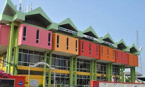

Industrial Training at PPAK

I experienced significant personal and professional growth during this training. I learned how to adapt to new tasks quickly, take initiative when handling responsibilities, and communicate clearly with both staff and users. Working with the public taught me to be patient and understanding, while participating in programs strengthened my confidence and leadership abilities. The training helped me become more disciplined, organized, and mindful of professional expectations.